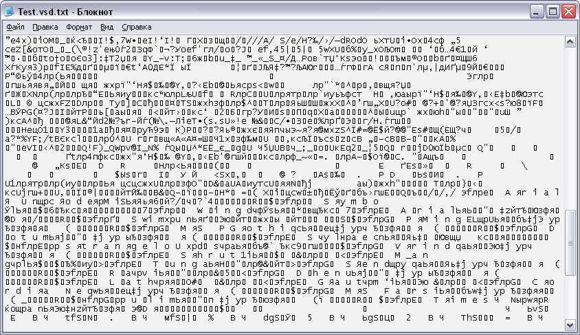
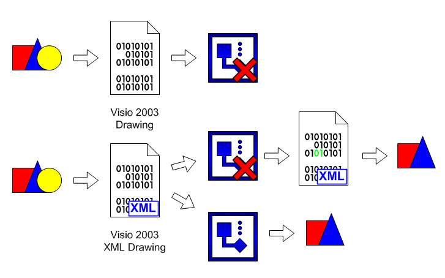

XML in Visio 2003.
 Mistakes. Mistakes in files are always. Not because developers have tried, that is why, partly, that modern files represent very complex structure, and is frequent the same program not in a condition to open a file which it 5 minutes ago has kept. Hundred times keep and open the same file can unless Notepad.
Mistakes. Mistakes in files are always. Not because developers have tried, that is why, partly, that modern files represent very complex structure, and is frequent the same program not in a condition to open a file which it 5 minutes ago has kept. Hundred times keep and open the same file can unless Notepad.
During work above something new objects are created, leave old, changes, etc. And by virtue of that the program not always can correctly "digest" this or that object are made, there are mistakes. The diversified problems which the person, not one month which has worked in this appendix almost at once identifies it as abnormal behaviour of the program will start to appear.
Outputs from such position a little to simplify structure of storage of the information or to enter the information for restoration.
On one of such conclusions format XML (eXtensible Markup Language) also is under construction.
I shall not result any complex schedules and to prove, that the given format "more abruptly" than any another, and would like to show on examples its work. It just to concern and to Visio since Visio 2003 is able to work and keep documents in this format, it is more true in own VDX, but as a matter of fact XML.
Let's lead simple comparison. We shall take, for an example, file Visio with one simple shape. We shall replace to it expansion on TXT and we shall glance inside. We shall see, that in it the code contains.

Now we shall take and we shall keep this file in format XML. Again we shall replace expansion and again we shall glance inside.

The full description of the document and its properties in a text format. In the beginning I have knowingly mentioned Notepad, it is simple and stable. And in this sense this format too is simple and stable. At the given format much in common with format HTML on which the majority of pages on the Internet is written. And this comparison is not casual.

Pages HTML it is possible to look and with absent pieces of a code, in this case it will be simple to be displayed that part which is, without any bindings to absent parts. And in format XML too most. If to replace one byte in file Visio it with a high probability will open but if there will be no blocks of the information no dancings with rabbit's foot will help.
XML it is adhered only to syntax of language and if any problems will arise at opening a file the appendix will deduce a window in which it will be specified, as where not so. And simply having opened the given file and having shown little ingenuities without effort it is possible to open the "impaired a little" file.

All will be possible in a file not. But it at least will be more, than a simple window about impossibility to open a file.
Also the important factor is compatibility in both parties, both upwards and downwards. I.e. the file saved in Visio 2003 in format VDX, opens and in Visio 2002 and on the contrary, the truth warning about new not distinguished tegs, that is normal. If the given format will be "native" and for subsequent versions Visio (Visio 12, etc.) it will be to it only in plus.
Articles page
Previous article
Author: Nichkov Alexey (a.k.a. Digitall)